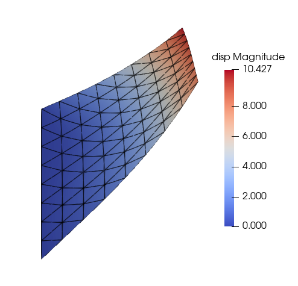

Example 2 - Cook’s membrane in 2D with Neo-Hookean material
In this example, we simulate the benchmark example of Cook’s membrane in plane-strain condition with Neo-Hookean material in the compressible regime.
The configuration file is quite similar to the one for the linear elastic material used in Example 1. Only the important blocks of the config file are shown below, with others being the same as that of Example 1.
## Material block
Material
{
id : 1
name : Matl_NeoHookean
density : 1.0
data_deviatoric : 92.525
data_volumetric : 3 0.0049883
}
In the case of linear elastic material, we used Young’s moduls and Poisson’s ratio, but this is not quite appropriate when working with hyperelastic models for which we often need to input more than two values, and, more importantly, we split the energy function into deviatoric and volumetric parts. So, we specifiy the parameters for the deviatoric and volumetric parts separately.
In this case for the Neo-Hookean model, we specifiy the value of shear modulus, which is 92.525, for the deviatoric part.
For the volumetric part, the first entry is the type of the volumetric function and the second entry is the inverse of bulk modulus.
## Tractions block
Tractions
{
rightedge
{
type : traction
value : 0.0 6.25 0.0
timefunction : 1
}
}
## Time Functions block
Time Functions
{
! f(t) = p1 + p2*t + p3*sin(p4*t+p5) + p6*cos(p7*t+p8)
!
! id t0 t1 p1 p2 p3 p4 p5 p6 p7 p8
1 0.0 1000.0 0.0 1.0 0.0 0.0 0.0 0.0 0.0 0.0
}
## Solver block
Solver
{
solvertype : newton
timescheme : STEADY
spectralRadius : 0.0
finalTime : 1.0
timeStep : 0.2
maximumSteps : 10
maximumIterations : 10
tolerance : 1.0e-7
debug : 0
}
Since the problem is nonlinear, we apply the load in several steps. We specifiy load steps using the time step size, and loading profile is defined in the Time Functions block and specified in the Tractions block for the boundary rightedge.
The contour plot of displacement magnitude, along with the element edges, is shown in the figure below. The displacement is slightly lower than that obtained with the linear elastic material; this is due to strain-stiffening - increase in material stiffness with deformation.
{kind=link}